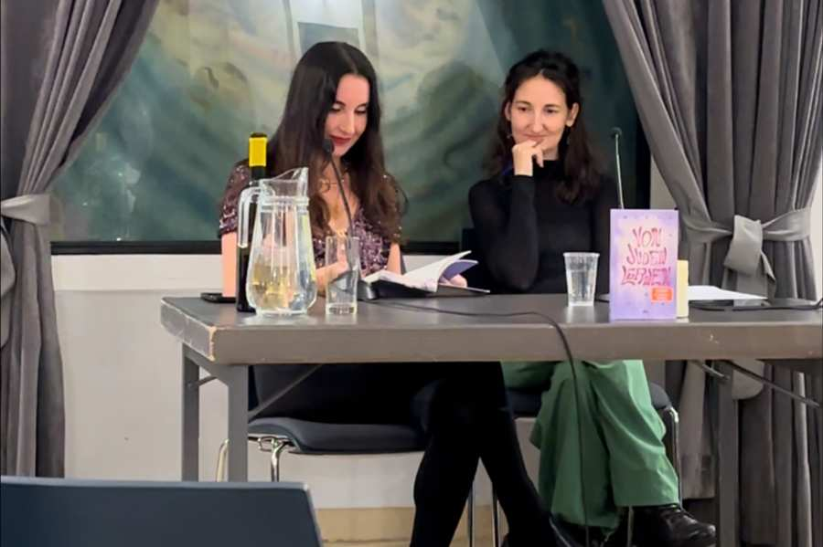

An inspiring evening in the packed literature café with Mirna Funk
On the evening of November 14th, the IKG community center was once again transformed into a meeting place for book lovers. Mirna Funk presented her book “Learning from Jews” (dtv), there was a huge turnout and the event was quickly reserved.
In a cozy coffee house atmosphere, Mirna Funk led the audience through 5,784 years of Jewish intellectual history, linked to current topics such as self-determination, internal and external culture of debate or the search for truth and self-determination. Her insightful and humorous explanations of concepts such as “Tikkun Olam” and “Machloket” highlighted how much today’s society can learn from Jewish philosophy. “Tikkun Olam” means “repair the world” and can be understood as a principle on how everyone can make their own daily contribution to improving the world. The book is very worth reading.
Many visitors secured a copy of the book directly at the book table (thanks to the bookstore nuevo tiempo). The signing line was long. It was an inspiring evening from which the audience gained a lot and will be remembered for a long time!